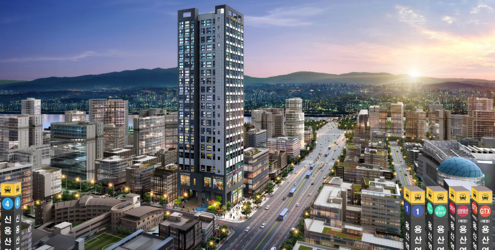
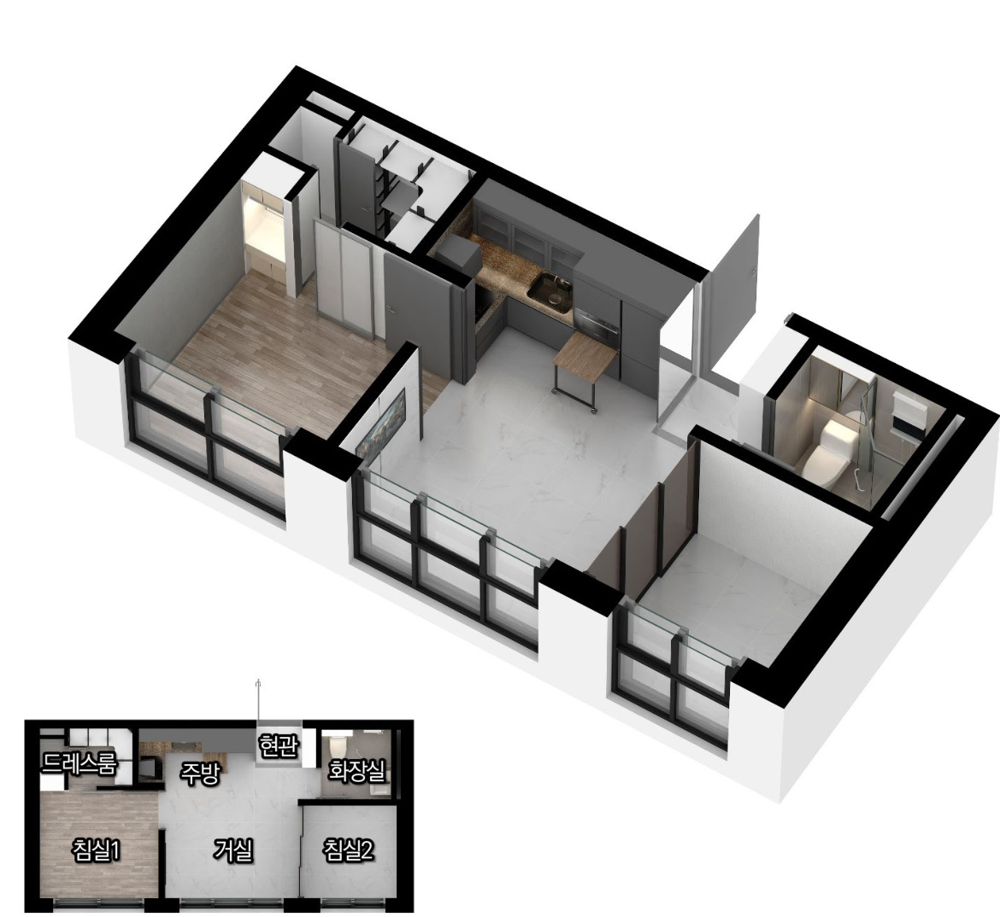

서울 · 오피스텔
DK밸리뷰 용산
신용산역·용산역 생활권 · 투룸 오피스텔분양가 확인 중PROJECT OVERVIEW
사업안내
용산구 한강로3가 한강대로변에 준공된 투룸 오피스텔입니다. 지하 2층~지상 20층, 오피스텔 83실(전용 약 29.6~33.8㎡)과 도시형생활주택 24세대로 구성되며, 2룸 3베이 구조에 풀퍼니시드 옵션을 갖췄습니다.
- 현장명
- DK밸리뷰 용산
- 위치
- 서울특별시 용산구 한강로3가 65-155
- 용도
- 오피스텔
- 건축규모
- 지하 2층 ~ 지상 20층 · 1개 동
- 공급규모
- 오피스텔 83실 + 도시형생활주택 24세대
- 시공
- 디케이건설
- 분양가
- 상담문의
- 계약·입주 안내
- 현재 잔여 호실과 조건은 상담 시 확인
LOCATION
입지환경
서울 용산구 한강로3가 65-155(한강대로14길 6). 4호선 신용산역 도보 약 8분, 1호선·경의중앙선·KTX 용산역 이용 가능. 신분당선 용산 연장·GTX-B 용산역 계획. 한강대로·강변북로·한강대교 진입이 편리하고 아이파크몰·용산가족공원·국립중앙박물관이 가깝습니다.
현장 주소서울특별시 용산구 한강로3가 65-155
UNIT PLAN
평면안내
ABCDE
오피스텔 전용 약 29.6~33.8㎡ A~E 5개 타입(2룸 3베이). 표시된 평면은 A타입입니다.

REFERENCE & DOCUMENTS
현장 안내자료
확인일 2026.10.28 · 위 링크에서 원본 안내를 확인할 수 있습니다. 최초 공급자료와 현재 판매조건은 구분해 확인해 주세요. 가격·혜택·입주 가능 여부는 담당 상담으로 확인해 주세요.
INTEREST REGISTRATION
관심고객등록
DK밸리뷰 용산에 대해 궁금한 내용을 남겨주세요.
카카오톡으로 분양정보 알림받기DK밸리뷰 용산 관련 검색어
- DK밸리뷰 용산
- 디케이밸리뷰
- DK밸리뷰
- 디케이 밸리뷰 용산
- 용산 투룸 오피스텔
- 신용산역 오피스텔
- 용산역 오피스텔
- 한강로3가 오피스텔
- 용산구 오피스텔 분양
- DK밸리뷰 용산 분양가
- DK밸리뷰 용산 모델하우스
- DK밸리뷰 용산 평면도
DK밸리뷰 용산 분양 상담 · 대표번호 1688-5650